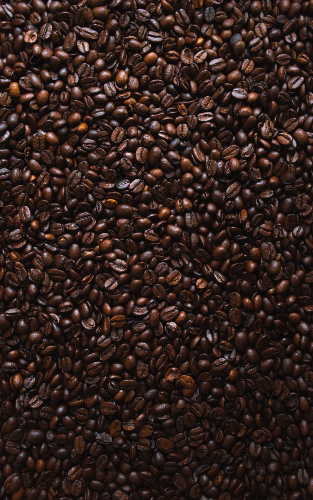
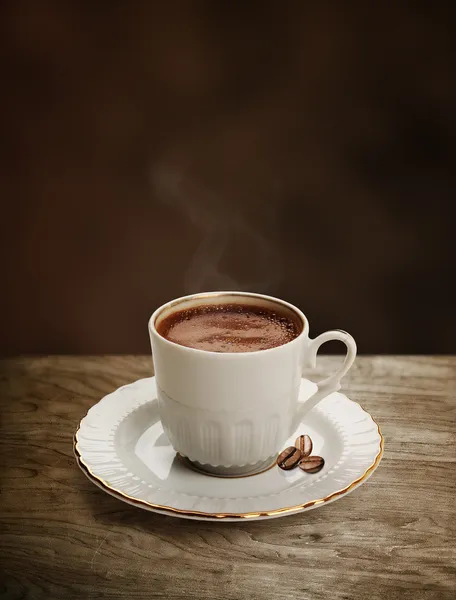

Kahve, kökboyasıgiller (Rubiaceae) familyasının Coffea cinsinde yer alan bir ağaç ve bu ağacın meyve çekirdeklerinin kavrulup öğütülmesi ile elde edilen tozun su ya da süt ile karıştırılmasıyla yapılan içecektir.
Kahve sözcüğü, Türkçeye Arapçadaki kahve (قهوة) sözcüğünden geçmiştir...
Kahve, beyaz ve kokulu çiçeklere sahip, kirazı andıran kırmızı meyvesinin içinde iki çekirdek bulunan...
Kahve, beyaz ve kokulu çiçeklere sahip... yalnızca Coffea Arabica ve Coffea Robusta türlerinin tarımı yapılmaktadır.
“AIdanma kahvenin kara rengine benzemez hiç gecenin zifirine...”
“Kendimi öldürmeli mi yoksa bir bardak kahve mi içmeliyim?” (Albert Camus)
Kahvenin kahve olabilmesi için, aşk gibi değil, ölüm gibi acı olması gerekir. (Arap Söylemi)
“Kahvede midir dostluk yoksa yüreklerde mi?” (Gülay Sıkılmaz Erçin)
“Kahve aşk gibidir, ne kadar sabır ve özen gösterirsen tadı o kadar güzel olur.” (Elif Şafak)
“Beni cinnetten çıkaran bir şey varsa, o da kahve hazır denildiğinde kahvenin hazır olmamasıdır.” (J. D. Salinger)
“Gel desem, bu akşam, bir kahve ısmarlayayım sana...” (Hasan Gezer)
Kafemiz tam dolu halinde 40 kişi almakta olup, masalarımız ikişer üçer dörder kişiliktir...

Adres: Mustafa Kemal Paşa Caddesi - 19 Mayıs Apartmanı No:38 Bostancı/İstanbul
Telefon: 0212 123 45 67
E-mail: kahvekafe@gmail.com